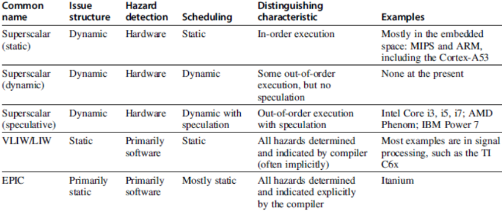

Teórica 02
Otimização de Código Sequencial
Otimização de Desempenho
Fases de Desenvolvimento
- Selecionar o melhor algoritmo;
- Utilizar a análise de complexidade para comprar algoritmos;
- Escrever código legível e fácil de gerir;
- Eliminar bloqueadores de otimizações;
- Medir o perfil de execução.
- Otimar as partes críticas para o desempneho
- Operações repetidas muitas vezes (p.e. ciclos interiores)
- Otimar as partes críticas para o desempneho
- Código com otimizações é mais complexo de ler, manter e de garantir a correção.
Paralelismo ao nível das Instruções
- O objetivo é maximizar o CPI.
- Pipeline CPI:
- Pipeline ideal do CPI +
- Structural Stalls +
- Data Hazard Stalls +
- Control Stalls
- Pipeline CPI:
\[ CPU_{time} = #Instr * CPI * Clk_{cycle} \]
- Paralelismo com bloco básico é limitado
- Tamanho típico do bloco é de 3 a 6 instruções;
- Deve ser otimizado entre branches.
Dependência de Dados
- Paralelismo ao nível dos loops
- Desenrolar o loop estáticamente o dinâmicamente;
- Utilizar o SIMD (processadores vetoriais e GPUs).
- Data Hazards
- Read After Write (RAW);
- Write After Write (WAW);
- Write After Read (WAR).
- Dependências de Controlo
- Ordenação da instrução \( i \) respeitando a instrução da branch.
Previsão da Branch
- Basic 2-bit predictor:
- Para cada branch:
- Prevê se o salto será dado ou não;
- Se a previsão estiver errada 2 vezes consecutivas, altera-a.
- Para cada branch:
- Previsão de correlação:
- Múltiplos 2-bit predictors para cada branch;
- Um para cada combinação possível de outcomes das \( n \) branches precedentes.
- Agendamento Dinâmico:
- Reordena as intruções para reduzir stalls enquanto mantém o flow de dados.
- Especulação Baseada em Hardware:
- Executa instruções de acordo com a execução prevista, mas apenas apresenta os resultados no caso da previsão ser correta.
Multiple Issue
- Uma forma de reduzir o CPI para < 1.

Otimizações Comuns de Compiladores
- Loops
- Identifica as variáveis de indução que são incrementadas/decrementadas por um valor fixo em cada iteração do ciclo (p.e.
j = i * 4 + 1passa aj += 5); - Fissão: parte o loop em múltiplos loops, sendo que cada um será responsável por apenas parte do corpo do loop original;
- Fusão: combina múltiplos loops de forma a reduzir o overhead;
- Inversão: altera o while loop genérico para um do-while;
- Intercâmbio: troca os loops internos com os loops externos;
- Movimenta o invariante do loop de forma a melhorar o desempenho do programa;
- Loop Unrolling: duplica o corpo do loop múltiplas vezes;
- Loop Splitting: parte o loop em múltiplos loops com o mesmo corpo, no entanto, estes iteram em partes contíguas dentro dos limites do indíce pretendido.
- Identifica as variáveis de indução que são incrementadas/decrementadas por um valor fixo em cada iteração do ciclo (p.e.
- Data Flow
- Elimina/Partilha subexpressões comuns;
- Reduz os custos das operações, isto é, as operações muito custosas são substituídas por operações mais "baratas";
- Constant Folding: substitui expressões constantes (p.e.
3 + 4) pelo seu valor final (neste caso,7); - Dead Store Elimination: remove variáveis atribuídas que não voltarão a ser lidas.
- Code Generation
- Alocação de Registos: as variáveis mais utilizadas são mantidas em registos do processador;
- Seleção de Instruções: seleciona 1 forma de múltiplas disponíveis para efetuar uma operação;
- Agendamento de Instruções: evita pipeline stalls;
- Re-materialização: Recalcula um valor, ao invés de o ir buscar à memória.
- Outras
- Bounds-checking elimination;
- Reordenação de blocos de código: altera a ordem de blocos básicos;
- Eliminição de código inutilizado;
- Inline Expansion: insere o corpo de uma função na chamada à função.
- Limitações
- Memory aliasing e efeitos secundários das funções;
- Tipicamente, os compiladores não tentam melhorar a complexidade dos algoritmos;
- Tipicamente, os compiladores apenas lidam com uma parte do programa de cada vez;
- Pode gerar-se um overhead no tempo de compilação devido às otimizações do compilador.